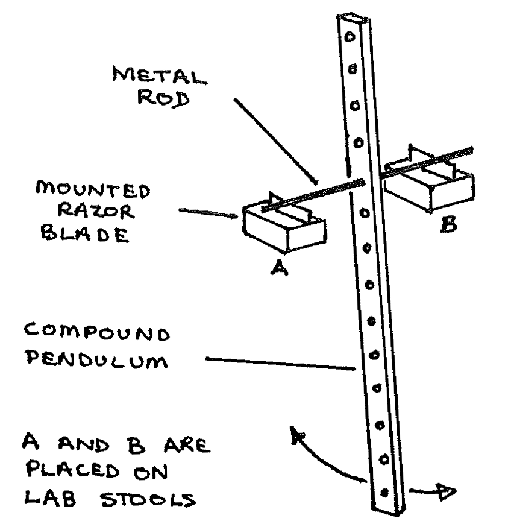
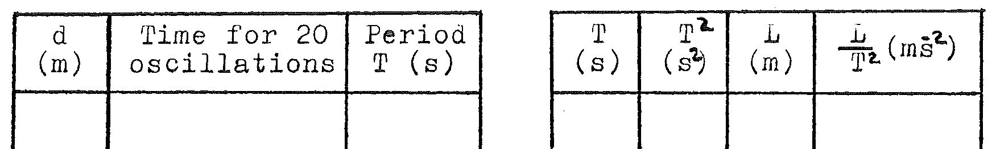

B5-1: Determining \(g\) Using a Compound Pendulum¶
Apparatus¶

Long uniform stick with holes at regular intervals; stiff 25cm long wire; 2 razor edges mounted on blocks; 4 lab stools; stopwatch; graph paper; triple beam balance
Procedure¶
- Suspend the stick as shown starting with the wire in the hole nearest the end of the stick. Record the time required for 20 oscillations of small amplitude. Find the periodic time, \(T\), where \(T = \frac{\text{time for 20 oscillations}}{20}\). Record the distance, \(d\), from each hole to the end of the stick you started near. Repeat for every hole from one end of the stick to the other.
- Measure and record the mass, M, of the stick.
- Graph \(T\) against \(d\). This graph will be a pair of roughly parabolic curves symmetric about a line parallel to the y-axis.
- Select 6 values of \(T\) and draw lines parallel to the x-axis through those values. These lines should cross each curve two times. Find the distance along the x-axis from left to right between the first point of intersection with the left hand curve and the first point of intersection with the curve on the right. Call this value L and tabulate it with the corresponding values of \(T\) and \(T^2\).
Observations¶
\(M=\text{mass of the stick}=\) ____ kg
Tabulate:

Average value of \(\frac{L}{T^2}=\) ____ \(\text{ms}{^-}{^2}\)
Theory¶
For a small displacement \(\theta\), the equation of motion of the stick executing simple harmonic motion is:
where \(M = \text{mass of the stick}\), \(h = \text{distance from the axis of rotation to the center of mass}\), \(\theta = \text{angular displacement in radians}\), \(I =\) the moment of inertia of the stick about the axis of rotation, and \(\alpha = \text{angular acceleration} = \frac{d^2\theta}{dt^2}\).
From the theory of simple harmonic motion the angular frequency, \(\omega\), is:
By the parallel axis theorum and definition of radius of gyration, \(k\):
and therefore:
The period of a simple pendulum is \(T = 2\pi\sqrt{\frac{L}{g}}\). L is equivalent to the expression \(\frac{1}{h}\sqrt{k^2 + h^2}\), which has a value found graphically as explained in procedure 4 (above). Using this value for \(L\) compute \(\frac{L}{T^2}\), and find \(g\) from the expression:
Analysis¶
- What is the value of \(g\) which you obtain using the average value of \(\frac{L}{T^2}\)?
- The moment of inertia of the bar can be found from the graph \(T\) against \(d\). The radius of gyration, \(k\), is one half the distance along the x-axis from the point where the slope of the left curve is zero to the point where the slope of the right curve is zero. Use this value of \(k\) and the mass of the stick to determine the moment of inertia of the stick.